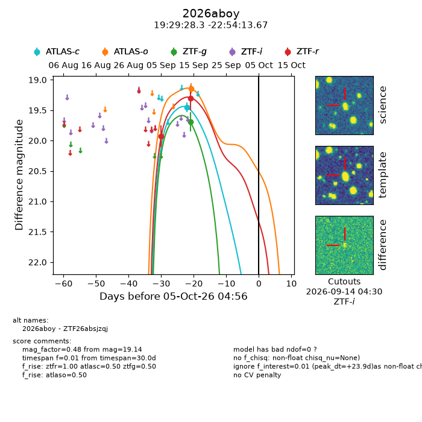
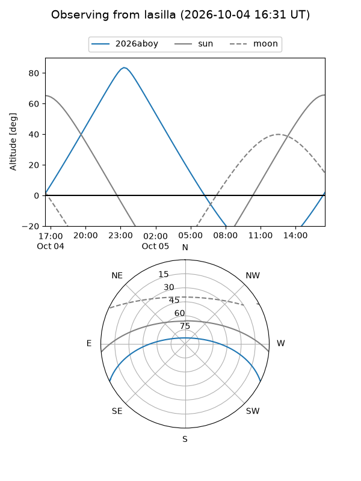
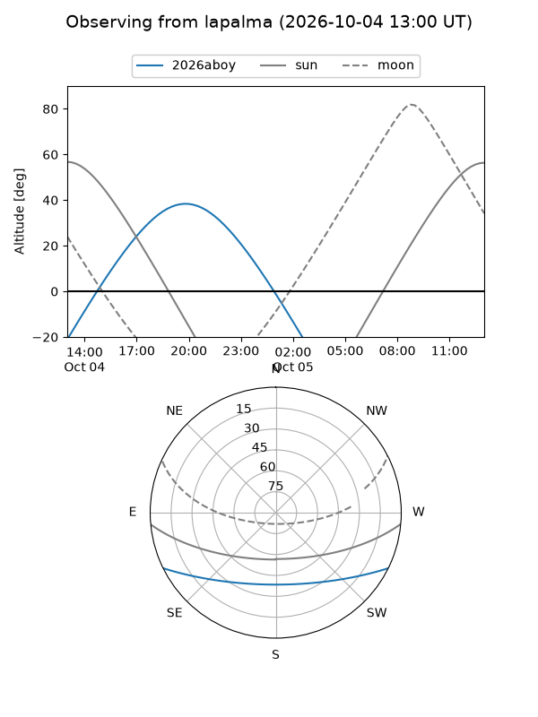
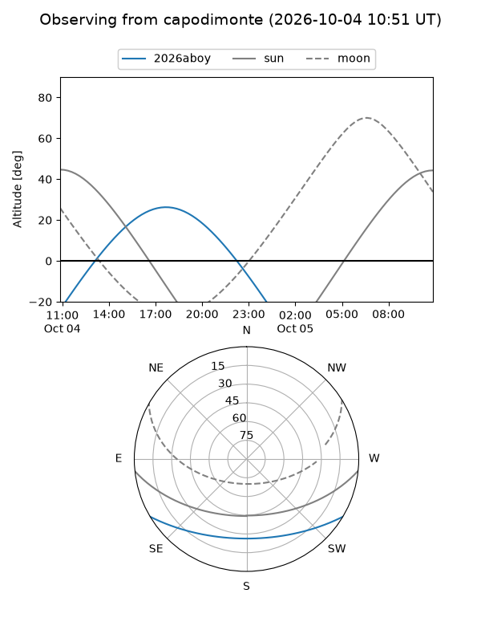
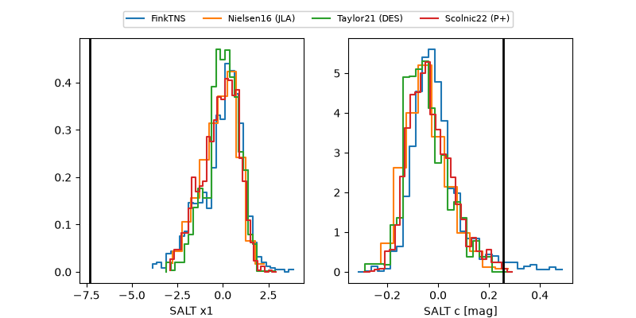

2026aboy
Target 2026aboy at 2026-10-05 04:58
Aliases and brokers:
FINK-ZTF: ztf.fink-portal.org/ZTF26absjzqj
Lasair-ZTF: lasair-ztf.lsst.ac.uk/objects/ZTF26absjzqj
ALeRCE-ZTF: alerce.online/object/ZTF26absjzqj
YSE-PZ: ziggy.ucolick.org/yse/transient_detail/2026aboy
TNS name: wis-tns.org/object/2026aboy
Direct TNS query: direct search
alt names
ZTF26absjzqj (ztf,fink_ztf)
2026aboy (tns,yse)
Coordinates:
equatorial (ra, dec) = 292.3680,-22.90380
equatorial (HMS+DMS) = 19:29:28.33,-22:54:13.67
galactic (l, b) = (15.9766,-18.23362)
Flags:
TNS type: nan
peak dt: +23.9
Photometry:
last atlasc=19.45, atlaso=19.14, ztfg=19.69, ztfr=19.30
1 atlasc, 1 atlaso, 1 ztfg, 2 ztfr detections
Lightcurve

Visibility



Additional plots
